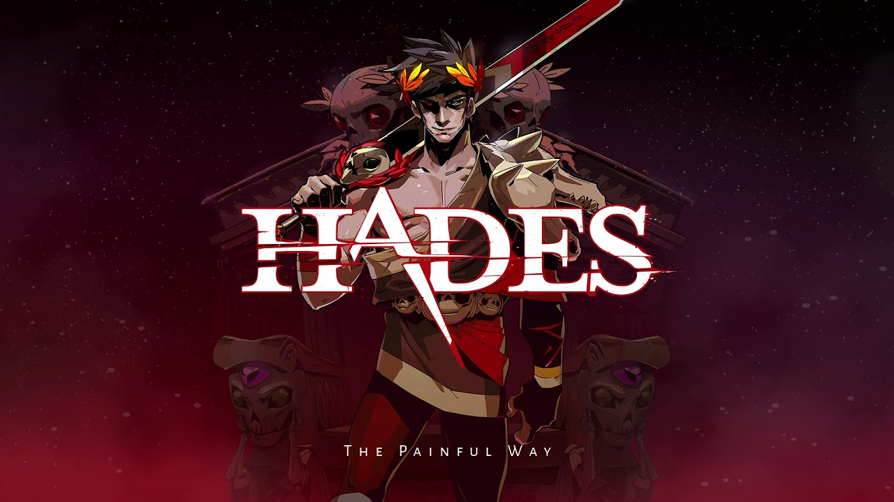

Hades
Hades adalah video game role-playing aksi roguelike yang dikembangkan dan diterbitkan oleh Supergiant Games. Game ini dirilis untuk Microsoft Windows, macOS, dan Nintendo Switch pada 17 September 2020, yang mengikuti rilis akses awal pada Desember 2018.
The Last Of Us 2
The Last of Us Part II adalah video game aksi-petualangan dan survival horror yang dikembangkan oleh Naughty Dog dan diterbitkan oleh Sony Interactive Entertainment. Permainan ini diumumkan pada acara PlayStation Exprience pada bulan Desember 2016, dan berfungsi sebagai sekuel game tahun 2013 bernama The Last of Us.
Ghost Of Tsushima
Ghost of Tsushima adalah game aksi-petualangan 2020 yang dikembangkan oleh Sucker Punch Productions dan diterbitkan oleh Sony Interactive Entertainment. Menampilkan dunia terbuka, ia mengikuti Jin Sakai, seorang samurai dalam upaya untuk melindungi Pulau Tsushima selama invasi Mongol pertama ke Jepang.